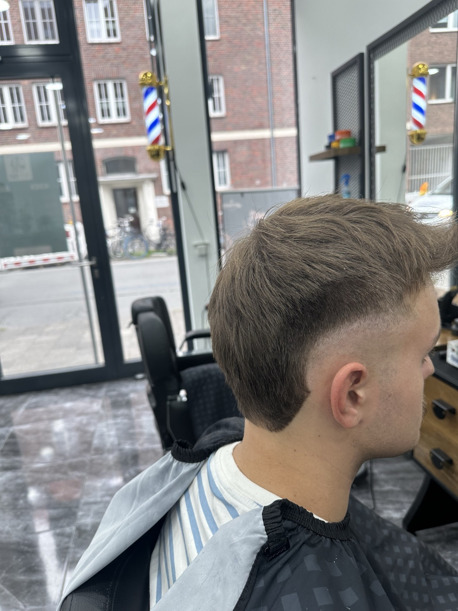
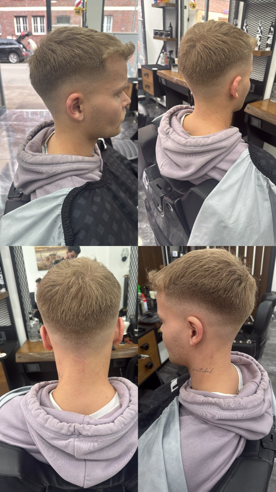
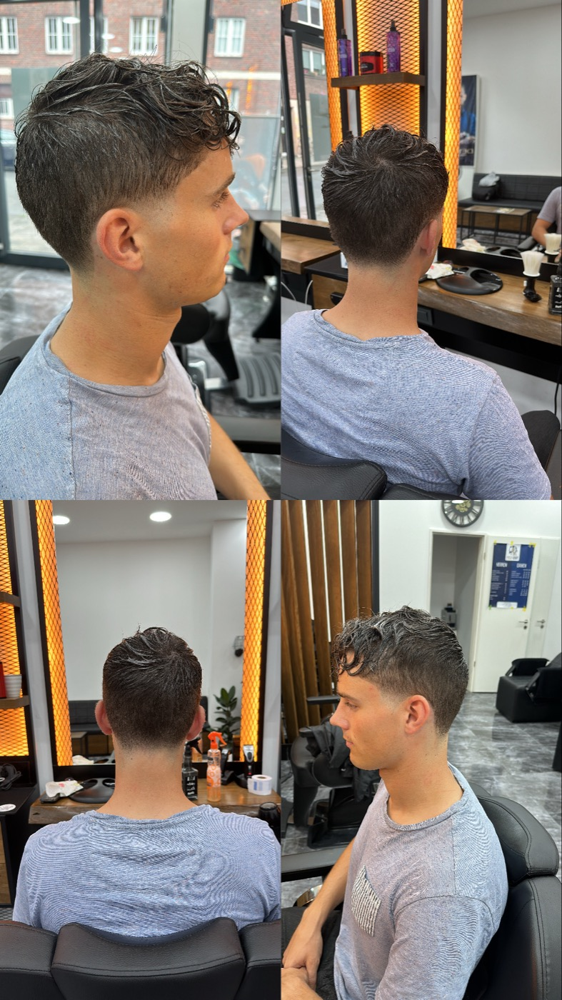
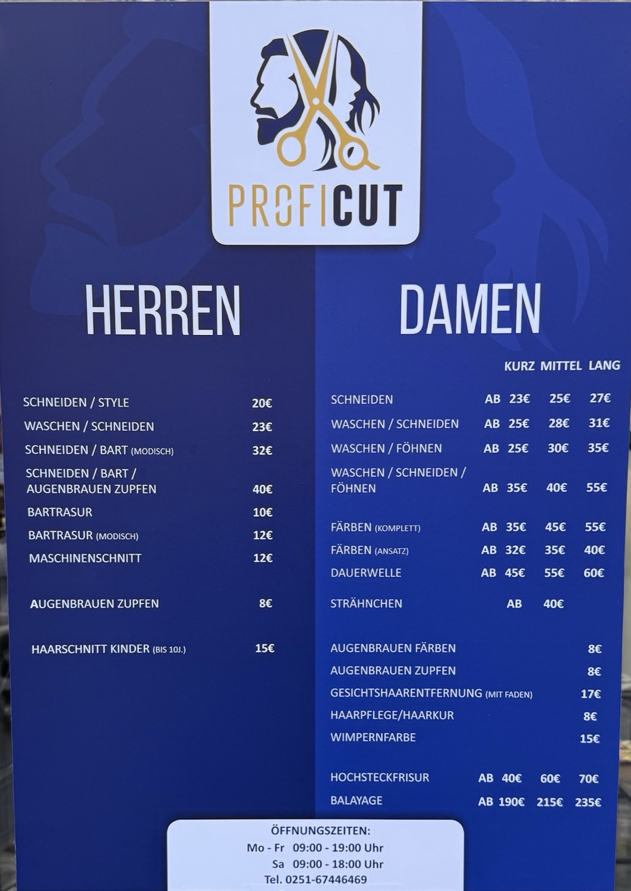
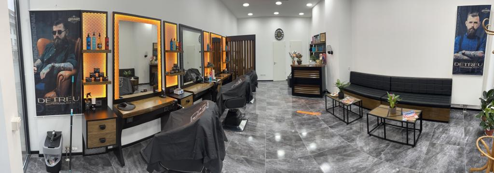

Aegidiistraße 46 · Münster
Rein, sitzen, passt.
Schnitt, Bart und Rasur mitten in Münster — ohne Termin, sechs Tage die Woche.
Scrollen — die Schere macht auf
Das Handwerk
Der Übergang entscheidet.
Ein Fade ist keine Länge, sondern ein Verlauf. Er wird in vier Schritten aufgebaut — und man sieht sofort, ob jeder davon gesessen hat.
Vier Schritte, in dieser Reihenfolge.
- Die MaschineVom Nacken aufwärts, Millimeter für Millimeter. Hier entsteht der Verlauf — noch nicht die Frisur.
- Die SchereDeckhaar auf Ihren Kopf geschnitten: Wirbel, Haarrichtung, Stirnform. Danach fällt es von allein richtig.
- Die KonturStirn, Schläfe, Nacken. Kanten, die drei Wochen halten und nicht schon nach fünf Tagen ausfransen.
- Der BartVom Fade in die Bartlinie: ein Übergang, keine Kante. Zum Schluss heißes Tuch.
Weiterscrollen — jeder Schritt zeigt, wo am Kopf er entschieden wird.
Vier Seiten. Ein Ergebnis.
Ein Schnitt, der nur von vorn sitzt, ist keiner. Beide Arbeiten stammen aus dem Salon — jeweils einmal rundum fotografiert.


Die Karte
Was es kostet. Ohne Sternchen.
Die Preise hängen im Laden aus — und stehen genauso hier. Bar oder mit EC-Karte.
Stand der Preistafel im Salon, August 2026. Beratung kostet nichts — sagen Sie einfach, was Sie vorhaben.

Auch für Damen
Nicht nur Herren.
Schnitt, Farbe, Strähnen, Hochsteckfrisur — die Damenkarte hängt auf derselben Tafel. Die Preise richten sich nach der Haarlänge.
- Schneidenab 23 €25 €27 €
- Waschen & Schneidenab 25 €28 €31 €
- Waschen & Föhnenab 25 €30 €35 €
- Waschen, Schneiden & Föhnenab 35 €40 €55 €
- Färbenkomplettab 35 €45 €55 €
- FärbenAnsatzab 32 €35 €40 €
- Dauerwelleab 45 €55 €60 €
- Hochsteckfrisurab 40 €60 €70 €
- Balayageab 190 €215 €235 €
- Strähnchenab 40 €
- Gesichtshaarentfernungmit Faden17 €
- Wimpernfarbe15 €
- Augenbrauen färben oder zupfenje 8 €
- Haarpflege & Kur8 €
Ab-Preise laut Aushang, August 2026. Der genaue Preis hängt an Länge, Dichte und Aufwand — das wird vorher besprochen, nicht hinterher.
Der Laden
Mitten in der Stadt.
Aegidiistraße 46, ein paar Schritte vom Aegidiimarkt. Helle Plätze, Spiegelwand, Marmorboden — und in der Regel geht es direkt los.

- Ohne TerminReinkommen reicht. Wenn viel los ist, hilft ein kurzer Anruf vorher.
- Sechs Tage geöffnetMo–Fr 9 bis 19 Uhr, Sa 9 bis 18 Uhr. Sonntag ist Ruhetag.
- Bar oder KarteEC-Karte wird akzeptiert, Bargeld natürlich auch.
- Kinder sind willkommenKinderschnitt bis 10 Jahre für 15 €. Geduld gehört laut Bewertungen dazu.
- Ebenerdig hineinBarrierefreier Eingang direkt von der Straße, keine Stufe.
- Kaffee zum WartenWird in den Google-Bewertungen regelmäßig erwähnt — und gelobt.
Was Münster sagt
aus 166 Google-Bewertungen
„Spontan entschieden. Ohne Termin direkt freundlich begrüßt. […] Sehr souverän und sicher mit Schere, Rasierer und Händen. […] Bart perfekt.“
„Haarschnitt genau wie besprochen. Bin seit Jahren bei dem Inhaber und kann ehrlich sagen: bester Friseur, bei dem ich je war.“
„Alle gehen auf die Wünsche ein — und können mega gut mit Kindern umgehen. Wirklich nice, immer wieder gerne.“
Der Stuhl ist frei.
Kommen Sie vorbei — oder rufen Sie kurz an, dann wissen Sie vorher, ob gerade jemand vor Ihnen dran ist.
Aegidiistraße 46 · 48143 Münster
Öffnungszeiten
Öffnungszeiten